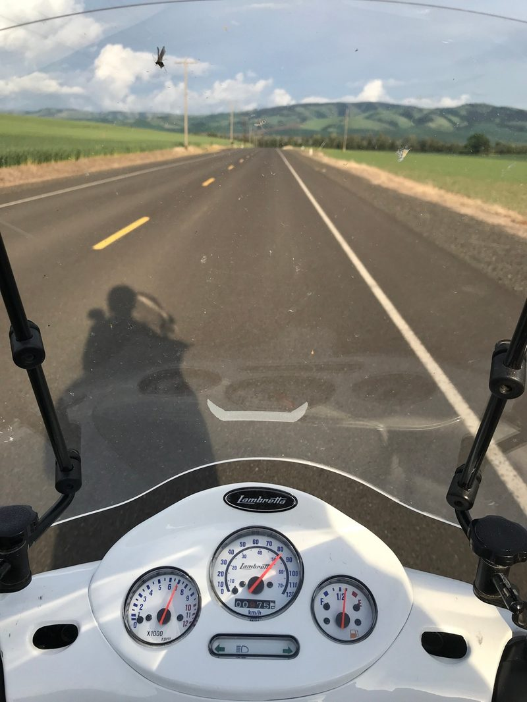
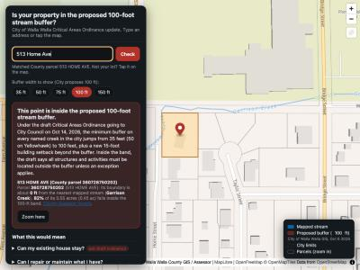
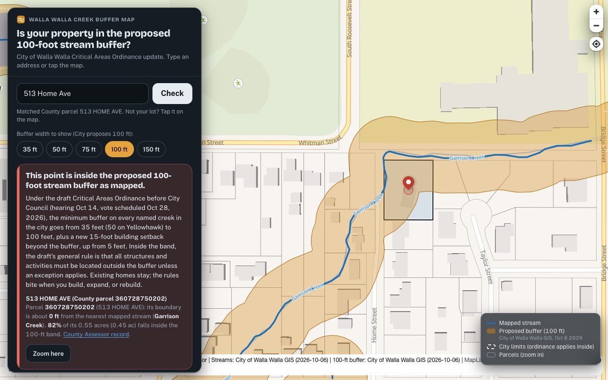
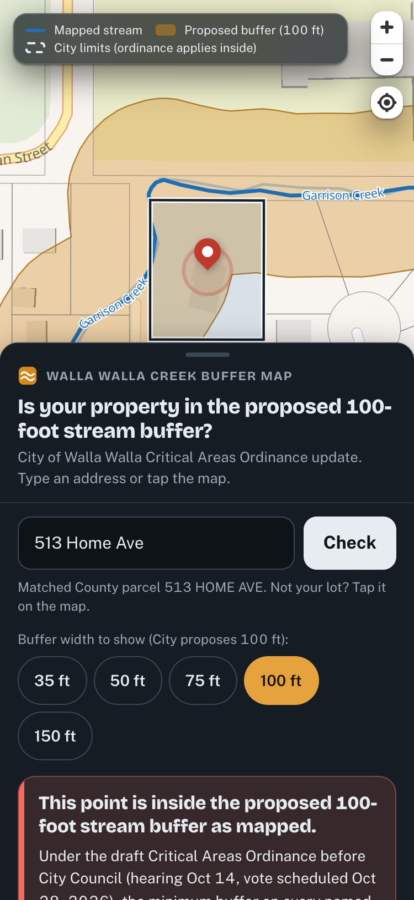
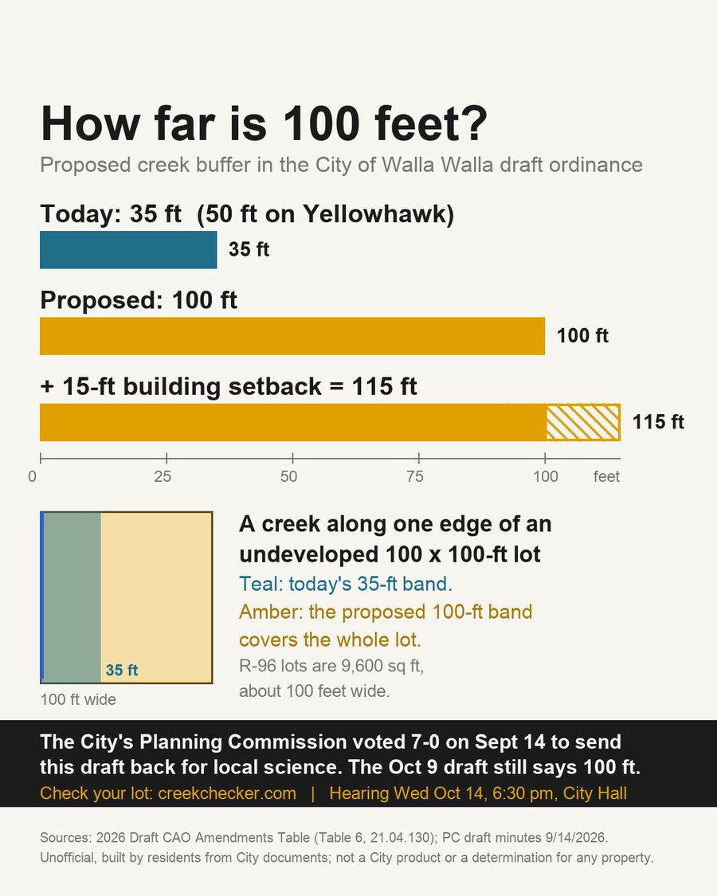
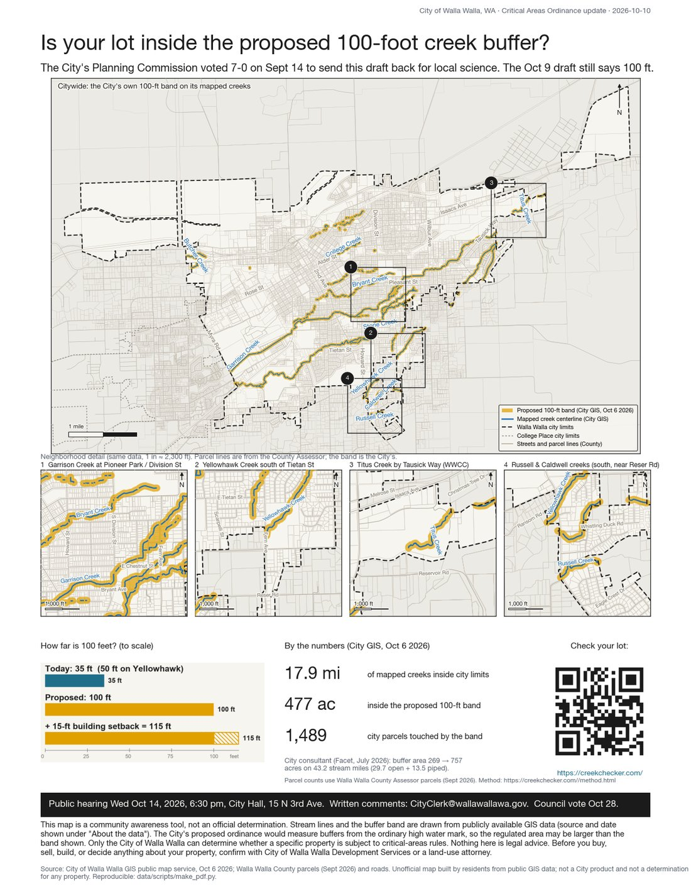
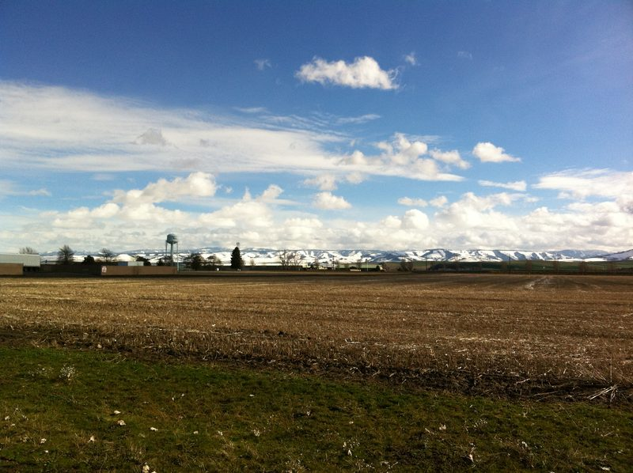

Behind the map
How this was built.
And who it is for.
CreekChecker began when shrubn.com's own land beside a creek turned out to be inside the City of Walla Walla's proposed buffer. The question "does this touch our lot, and what would it stop us doing?" had no public answer, so we built one. This page explains the method so you can judge it for yourself, and borrow it for your own town.

The problem
A line on a map that nobody could read.
The City's draft Critical Areas Ordinance proposes a 100-foot buffer on every mapped creek, up from 35 feet today (50 on Yellowhawk), plus a new 15-foot building setback. The City published the band as a static map. Residents could see the stripe across town but not whether it crossed their own lot, or what it would mean if it did. On Sept 14 the City's Planning Commission voted 7-0 to send the draft back for science matching local conditions; the draft posted Oct 9 was unchanged. The hearing is Oct 14; the vote is scheduled Oct 28.
A website is useful when it answers one question a real person has, from the authority's own data, in plain words. shrubn.com directs that work. AI is the tool we use to do in days what used to take a team months: reading a 48-page ordinance, cross-checking three agencies' GIS layers, fact-checking every sentence, and rendering it for a phone.
The method: what shrubn.com does for a client
Read the record
Everything on this site traces to a numbered facts ledger built from primary documents: the City's draft amendments table, the City's web page, the Planning Commission minutes, the City consultant's memo, Fish & Wildlife's comment letter, the municipal code, and state statute. Claims that could not be sourced were dropped, including several in the memo that started the project.
Use the authority's own data, live
The City published its stream centerlines and its 100-foot buffer polygon as a public map service on Oct 6. The County publishes parcels, city limits, the growth area, and its own working buffer layer. CreekChecker reads those services directly in your browser and re-hosts nothing, so what you see is what the City drew, measured with the same geometry it used.
Check the map against the rule
The City's layer contains every creek named in the draft's Table 6 except Reser Creek, which lies outside city limits, and excludes Mill Creek, which the draft leaves to the Shoreline Master Program. The method page lists every reach the County or the State maps that the City does not, so "the map is missing my creek" has a specific answer.
Say what it actually limits
Each result explains, in plain words, what the draft says and what existing city code says: new structures inside the band, additions toward the creek, subdividing, the six-month rule after a fire, and the cost of a critical-areas report. Each line is tagged with its basis. Where the draft is silent, the page says so.
Design for trust
Cream paper, dark ink, creek blue. Type you can read in a truck cab. One address field, one answer, one action. Every number carries its source, and the disclaimer is one tap away on every page.
Verify everything twice
Tested at phone and desktop widths, with reduced motion respected. Every public sentence is fact-checked against the ledger before it goes live, and again after any edit. The same checked data feeds the printed flyer, the window sign, the social graphics and the impact charts, so the story is consistent whether you meet it on a phone, a lamppost, or at the hearing.
Then organize
A map that shows the problem is not enough. The site ends with one action (one sentence to Council), the eight streets with the most affected lots, printable signs and hearing cards, and a way to tell the organizers about your property.
Before and after
From prototype to release.










What it took
Public data. Expert direction. AI as the tool.
A static site, two open map libraries, the City's and County's public services, and a sourced facts ledger behind every number. No address you type is stored or sent to us; anonymous visit counts only. The code is public at github.com/corbenk/walla-walla-creek-buffer-map.
For your town
Every city in Washington reviews this ordinance on a state schedule.

The same approach works anywhere an authority publishes its data: read the record, use the authority's own layers, say plainly what the rule means, and give people a way to speak. If your town, business or cause has a question like this one, shrubn.com can build the answer.
Made with ♥ by shrubn.com